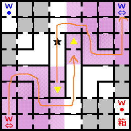
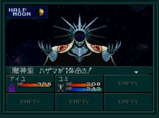

- 30F
- 31F
- 32F
- 37F
- BOSS:마신황 하자마
마지막 보스인 마신황 하자마를 목표로 계속 올라가는 길이다. 이번에도 역시 특별한 것은 없다.
37F에서
BOSS:마신황 하자마를 쓰러뜨리면 엔딩이다.
30F

- ★ : 하자마
- 箱 : 속성 변화 보상
- ■ 지역 : COMP 사용 불가
각 워프존이 서로 대응하고 있다.
31F
W6→W7로 북동의 계단에 가면 속성 변화 보상이 있는 장소로 갈 수 있다.
32F
37F
BOSS:마신황 하자마

유미, 찰리, 아키라 루트의 최종 보스
| 이름 |
Lv80 魔神皇ハザマ |
| HP |
20000 |
| 마법/특기 |
マハラギダイン／マハブフダイン／マカラカーン／アカシャアーツ／菩薩掌／ソウルスマッシュ／ランダマイザ |
| 유효 |
검, 총, 검(악마), 공격(악마), 기술(악마), 화염, 충격, 만능 |
| 무효 |
돌격(악마), 빙결, 전격, 신경, 마력, 속박 |
| 반사 |
파마, 주살 |
| 추천 파티 구성 |
| 전열 |
공격력이 높고, 공격 회수가 많은 캐릭터 |
| 후열 |
캬쟈계, 운다계 마법을 사용하는 캐릭터
데쿤다를 사용하는 캐릭터
회복 마법을 사용하는 캐릭터 |
- 하자마의 기술 중 란다마이자(ランダマイザ)는 아군의 공격력, 방어력, 명중률을 내리는 마법으로 파트너나 중마가 데쿤다(デクンダ)를 습득하고 있으면 무효화 할 수 있어서 좋다.
- 카지노 또는 분노계 CB에서 얻을 수 있는 라스터캔디(ラスタキャンディ)를 적극 사용해서 아군을 버프 시키고, 하자마는 데쿤다를 사용하지 않기 때문에 운다계(라쿤다) 마법으로 디버프를 걸어주자.